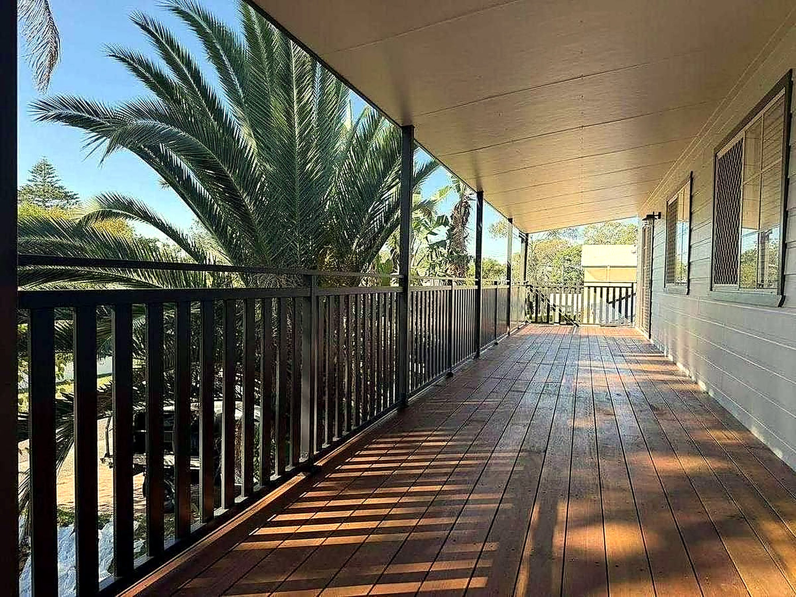

01
Commercial fitouts
Office, retail and hospitality fitouts - services coordination, compliance and finish quality on programme.
Construction & Project Management
Commercial fitouts, residential projects, renovations and project management — delivered with precision from set-out to completion.

A horizontal construction timeline - the same site panel morphs left to right through four stages (set-out, frame, clad, complete) as the scroll sweeps a playhead marker across it.
Four core service pillars - each managed end-to-end with the same rigour.
01
Office, retail and hospitality fitouts - services coordination, compliance and finish quality on programme.
02
New homes and major renovations - structural to finish, managed with site discipline and clear communication.
03
Extensions, remodels and adaptive reuse - integrating new work with existing fabric seamlessly.
04
Programme control, procurement, quality assurance and stakeholder coordination - single point of accountability.
// WALL FRAME DETAIL - stud to plate, fixed and checked
Tell us about the job and we'll come back with a firm price - no surprises, no obligation.